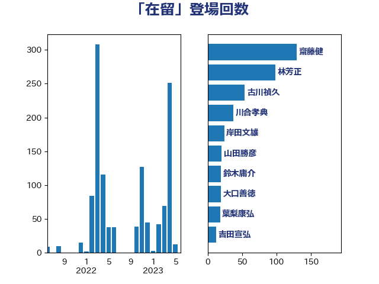

単語「在留」

| 齋藤健 | 自由民主党 | 129 回 |
| 林芳正 | 自由民主党 | 98 回 |
| 古川禎久 | 自由民主党 | 54 回 |
| 川合孝典 | 国民民主党 | 37 回 |
| 岸田文雄 | 自由民主党 | 24 回 |
| 山田勝彦 | 立憲民主党 | 20 回 |
| 鈴木庸介 | 立憲民主党 | 19 回 |
| 大口善徳 | 公明党 | 19 回 |
| 葉梨康弘 | 自由民主党 | 18 回 |
| 吉田宣弘 | 公明党 | 12 回 |
| 高良鉄美 | 無所属 | 11 回 |
| 鈴木貴子 | 自由民主党 | 11 回 |
| 田所嘉徳 | 自由民主党 | 11 回 |
| 高橋英明 | 日本維新の会 | 10 回 |
| 津島淳 | 自由民主党 | 10 回 |
| 羽田次郎 | 立憲民主党 | 8 回 |
| 石橋林太郎 | 自由民主党 | 8 回 |
| 牧山ひろえ | 立憲民主党 | 8 回 |
| 中川正春 | 立憲民主党 | 8 回 |
| 藤岡隆雄 | 立憲民主党 | 7 回 |
| 石川大我 | 立憲民主党 | 7 回 |
| 田島麻衣子 | 立憲民主党 | 7 回 |
| 杉本和巳 | 日本維新の会 | 7 回 |
| 本田太郎 | 自由民主党 | 7 回 |
| 日下正喜 | 公明党 | 7 回 |
| 宮崎政久 | 自由民主党 | 7 回 |
| 加田裕之 | 自由民主党 | 7 回 |
| 阿部弘樹 | 日本維新の会 | 6 回 |
| 義家弘介 | 自由民主党 | 6 回 |
| 本村伸子 | 日本共産党 | 6 回 |
| 福島みずほ | 社会民主党 | 5 回 |
| 杉田水脈 | 自由民主党 | 5 回 |
| 市村浩一郎 | 日本維新の会 | 5 回 |
| 高橋光男 | 公明党 | 4 回 |
| 門山宏哲 | 自由民主党 | 4 回 |
| 小野田紀美 | 自由民主党 | 4 回 |
| 仁比聡平 | 日本共産党 | 4 回 |
| 青木愛 | 立憲民主党 | 3 回 |
| 鈴木義弘 | 国民民主党 | 3 回 |
| 谷合正明 | 公明党 | 3 回 |
| 美延映夫 | 日本維新の会 | 3 回 |
| 米山隆一 | 立憲民主党 | 3 回 |
| 矢倉克夫 | 公明党 | 3 回 |
| 渡辺周 | 立憲民主党 | 3 回 |
| 清水真人 | 自由民主党 | 3 回 |
| 河野太郎 | 自由民主党 | 3 回 |
| 武井俊輔 | 自由民主党 | 3 回 |
| 斎藤アレックス | 国民民主党 | 3 回 |
| 大塚耕平 | 国民民主党 | 3 回 |
| 加藤勝信 | 自由民主党 | 3 回 |
| 伊藤俊輔 | 立憲民主党 | 3 回 |
| 三ッ林裕巳 | 自由民主党 | 3 回 |
| 高見康裕 | 自由民主党 | 2 回 |
| 高木かおり | 日本維新の会 | 2 回 |
| 高市早苗 | 自由民主党 | 2 回 |
| 馬場伸幸 | 日本維新の会 | 2 回 |
| 青山大人 | 立憲民主党 | 2 回 |
| 鎌田さゆり | 立憲民主党 | 2 回 |
| 鈴木敦 | 国民民主党 | 2 回 |
| 鈴木宗男 | 日本維新の会 | 2 回 |
| 金城泰邦 | 公明党 | 2 回 |
| 足立康史 | 日本維新の会 | 2 回 |
| 赤嶺政賢 | 日本共産党 | 2 回 |
| 谷川とむ | 自由民主党 | 2 回 |
| 秋本真利 | 自由民主党 | 2 回 |
| 福山哲郎 | 立憲民主党 | 2 回 |
| 石垣のりこ | 立憲民主党 | 2 回 |
| 田中健 | 国民民主党 | 2 回 |
| 牧義夫 | 立憲民主党 | 2 回 |
| 熊田裕通 | 自由民主党 | 2 回 |
| 漆間譲司 | 日本維新の会 | 2 回 |
| 源馬謙太郎 | 立憲民主党 | 2 回 |
| 浜口誠 | 国民民主党 | 2 回 |
| 浅田均 | 日本維新の会 | 2 回 |
| 柴田巧 | 日本維新の会 | 2 回 |
| 松野博一 | 自由民主党 | 2 回 |
| 末松信介 | 自由民主党 | 2 回 |
| 徳永久志 | 立憲民主党 | 2 回 |
| 山田賢司 | 自由民主党 | 2 回 |
| 安江伸夫 | 公明党 | 2 回 |
| 堀場幸子 | 日本維新の会 | 2 回 |
| 城内実 | 自由民主党 | 2 回 |
| 和田有一朗 | 日本維新の会 | 2 回 |
| 和田政宗 | 自由民主党 | 2 回 |
| 上田清司 | 国民民主党 | 2 回 |
| 一谷勇一郎 | 日本維新の会 | 2 回 |
| 鈴木馨祐 | 自由民主党 | 1 回 |
| 鈴木英敬 | 自由民主党 | 1 回 |
| 金村龍那 | 日本維新の会 | 1 回 |
| 金子道仁 | 日本維新の会 | 1 回 |
| 西銘恒三郎 | 自由民主党 | 1 回 |
| 藤巻健太 | 日本維新の会 | 1 回 |
| 藤川政人 | 自由民主党 | 1 回 |
| 萩生田光一 | 自由民主党 | 1 回 |
| 若松謙維 | 公明党 | 1 回 |
| 舩後靖彦 | れいわ新選組 | 1 回 |
| 舟山康江 | 国民民主党 | 1 回 |
| 笠浩史 | 無所属 | 1 回 |
| 穀田恵二 | 日本共産党 | 1 回 |
| 神田潤一 | 自由民主党 | 1 回 |
| 玉木雄一郎 | 国民民主党 | 1 回 |
| 牧島かれん | 自由民主党 | 1 回 |
| 清水貴之 | 日本維新の会 | 1 回 |
| 深澤陽一 | 自由民主党 | 1 回 |
| 浜地雅一 | 公明党 | 1 回 |
| 泉健太 | 立憲民主党 | 1 回 |
| 沢田良 | 日本維新の会 | 1 回 |
| 水岡俊一 | 立憲民主党 | 1 回 |
| 松本剛明 | 自由民主党 | 1 回 |
| 松原仁 | 立憲民主党 | 1 回 |
| 東徹 | 日本維新の会 | 1 回 |
| 朝日健太郎 | 自由民主党 | 1 回 |
| 打越さく良 | 立憲民主党 | 1 回 |
| 平木大作 | 公明党 | 1 回 |
| 岸真紀子 | 立憲民主党 | 1 回 |
| 岬麻紀 | 日本維新の会 | 1 回 |
| 山田美樹 | 自由民主党 | 1 回 |
| 山下貴司 | 自由民主党 | 1 回 |
| 尾崎正直 | 自由民主党 | 1 回 |
| 小田原潔 | 自由民主党 | 1 回 |
| 寺田稔 | 自由民主党 | 1 回 |
| 宮本岳志 | 日本共産党 | 1 回 |
| 守島正 | 日本維新の会 | 1 回 |
| 大塚拓 | 自由民主党 | 1 回 |
| 大串正樹 | 自由民主党 | 1 回 |
| 大串博志 | 立憲民主党 | 1 回 |
| 堀井巌 | 自由民主党 | 1 回 |
| 國場幸之助 | 自由民主党 | 1 回 |
| 吉田はるみ | 立憲民主党 | 1 回 |
| 住吉寛紀 | 日本維新の会 | 1 回 |
| 伊波洋一 | 無所属 | 1 回 |
| 井出庸生 | 自由民主党 | 1 回 |
| 上田勇 | 公明党 | 1 回 |
| 上杉謙太郎 | 自由民主党 | 1 回 |